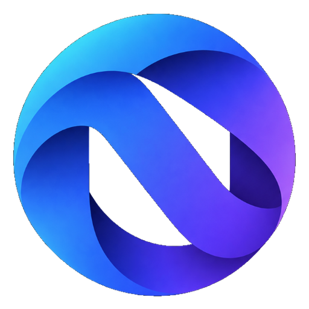

01
One home for your browser
Find the Windows and Android downloads in one clear place, with the latest available build linked from the official release.
WINDOWSANDROID

nexora.BROWSER Get Nexora ↗Meet Nexora Browser — a fresh place to start your next search, open your favourite sites, and get on with what you came to do.
 Google
Google YouTube
YouTube Wikipedia
WikipediaEverything you need to get started with Nexora, without hunting through folders or guessing which build to choose.
Find the Windows and Android downloads in one clear place, with the latest available build linked from the official release.
See the release tag and file details when available, then open the release page for notes and previous builds.
Use the platform that fits your day. Choose a Windows build for your PC or an Android package for your phone.
Good software should make the next step feel simple.
Nexora starts with that idea.
Nexora is built around the everyday things a browser should make easy: opening a new tab, finding your next destination, and getting back to what matters.
A clean start page puts search and your favourite destinations front and centre, so the web feels open from the moment you launch.
Explore the Windows build ↗＋Take the Nexora experience with you. Check the Android release below to find the latest available build for your phone.
Find Nexora for Android ↗＋Explore the five browser names together in one place: Chrome, Firefox, Edge, Opera and Vivaldi. Open any official site from the Nexora Web Suite.
 Google ChromeOfficial website ↗↗
Google ChromeOfficial website ↗↗
 Mozilla FirefoxOfficial website ↗↗
Mozilla FirefoxOfficial website ↗↗
 Microsoft EdgeOfficial website ↗↗
Microsoft EdgeOfficial website ↗↗
 OperaOfficial website ↗↗
OperaOfficial website ↗↗
 VivaldiOfficial website ↗↗
VivaldiOfficial website ↗↗
These links open each browser’s official website. Nexora itself still runs on Chromium; this section does not switch its underlying browser engine.
Choose your device below. The download links are checked against the latest public GitHub release.
Bring your browsing to your Windows PC.
Take Nexora with you on your Android phone.
Connecting to the latest public release…